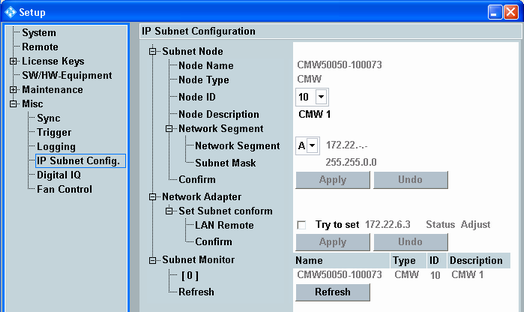

This section configures the internal IPv4 subnet of the instrument. It is only relevant for instruments equipped with option R&S CMW-B661x. The LAN SWITCH connectors on the rear panel provide access to the internal subnet. It is, for example, required for signaling message monitoring via an external PC. The external PC is connected via the LAN SWITCH to the internal subnet and thus to the signaling units.
The R&S CMW subnet uses the subnet mask 255.255.0.0. IP addresses belonging to the subnet are structured as follows.
- W.X:
Network ID, identifying the network segment used by the subnet. The network ID is identical for all IP addresses belonging to the subnet. Example: 172.22.y.z. - Y:
Node ID, identifying a network node within the subnet (subnet node). Configure a different node ID for each instrument and PC belonging to the subnet. - Z:
Adapter ID, identifying a network adapter within a subnet node.
Some applications require that you establish a direct connection between the LAN REMOTE connector and the LAN SWITCH and assign a specific IP address to the "Lan Remote" network adapter. To do so, plug a patch cable into the LAN REMOTE connector and into connector 1 of the LAN SWITCH. Assign the subnet conform IP address W.X.Y.3 to the "Lan Remote" network adapter via the configuration dialog, see "Network Adapter".
- Selftest "Unit Test > IP Access Test External", with any LAN switch version (R&S CMW-B661x)
(requires "User (Extended)" mode, see "External Tests") - Protocol testing with an old LAN switch (R&S CMW-B661A), without a DAU (R&S CMW-B450x)
- Usage of an old LAN switch (R&S CMW-B661A) and an external DAU installed on another instrument
- Monitoring of signaling messages via an external PC, with an old LAN switch (R&S CMW-B661A), without a DAU
The elements of the subnet configuration dialog are described below.

This section configures the internal IPv4 subnet of the instrument.
Displays the fixed name assigned to the subnet node, i.e. to the instrument.
Remote command:Displays the type of the subnet node (always CMW).
Remote command:Selects the ID of the subnet node, used as third octet of the IPv4 address.
Example: Node ID = 10 results in W.X.10.Z.
Remote command:Specifies a description for easy identification of the subnet node, for example in the subnet monitor output.
Remote command:Selects the network segment to be used for the subnet. The subnet mask always equals 255.255.0.0.
- A: 172.22.Y.Z
- B: 172.18.Y.Z
- C: 172.7.Y.Z
Applies or cancels changes of the subnet node configuration.
Applying a changed "Node ID" or "Network Segment" initiates a reboot of the instrument.
Remote command:Allows you to assign a subnet conform IP address to the "Lan Remote" network adapter of the instrument.
To do so, enable the checkbox and press the "Apply" button.
As a consequence, DHCP is disabled, any IP addresses already assigned to the "Lan Remote" network adapter are removed and the displayed fixed IP address is assigned instead.
The displayed state indicates whether the displayed address has been successfully assigned to the network adapter ("Status Adjust") or not ("Status Not Adjust").
Remote command:List of all nodes detected in the subnet, including the instrument itself. The list indicates the name, the type, the ID and the description of each node. For the R&S CMW, this information corresponds to the values in section "Subnet Node".
Detected subnet nodes can, for example, be other R&S CMW ("Type" = "CMW") or external PCs ("Type" = "PC").
Press the "Refresh" button to initiate a new scan of the subnet.
The subnet monitor is especially useful for troubleshooting. When you have connected a network node to the internal subnet, check whether it is detected and whether there are address conflicts (same ID used by several nodes).
Remote command: